Stirling Engine — Mechanical Design
Engine · SolidWorks · 3D-Model
 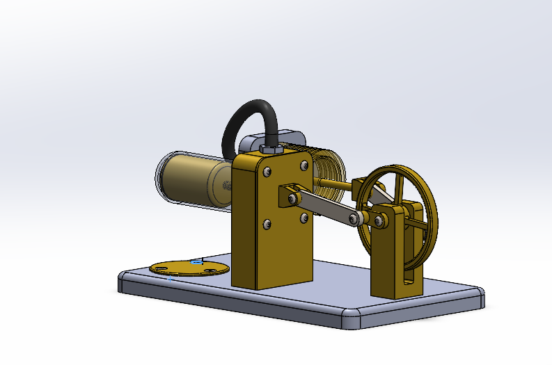
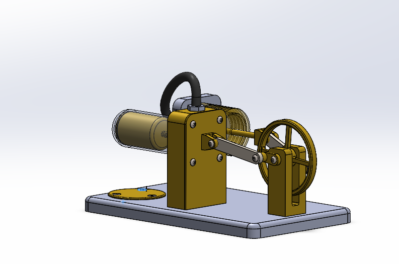
 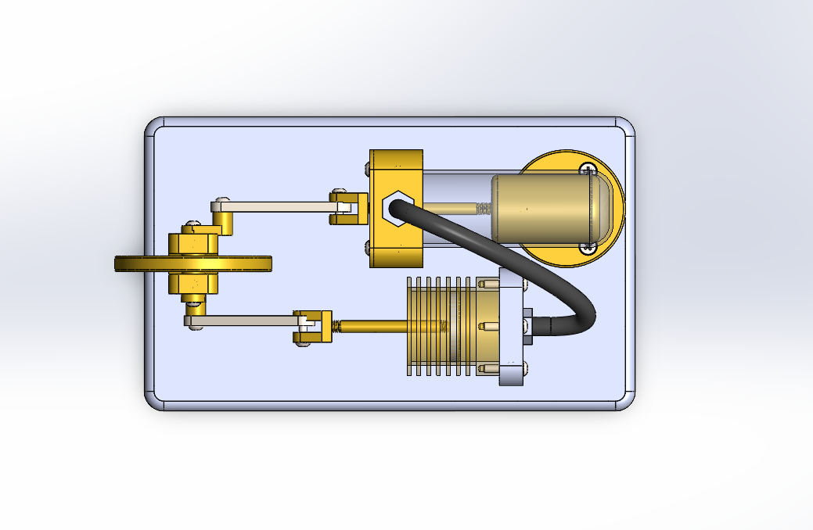
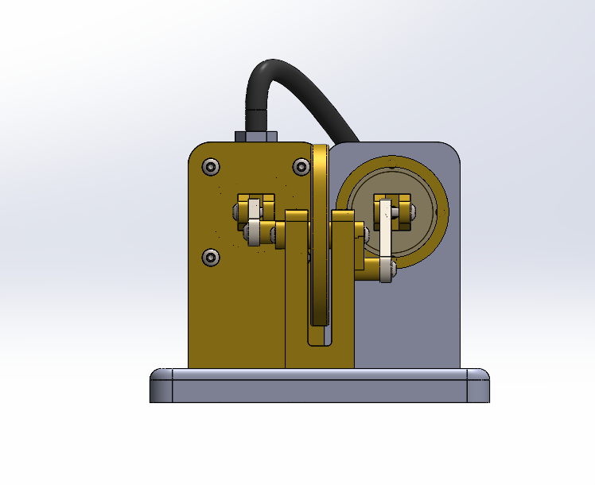
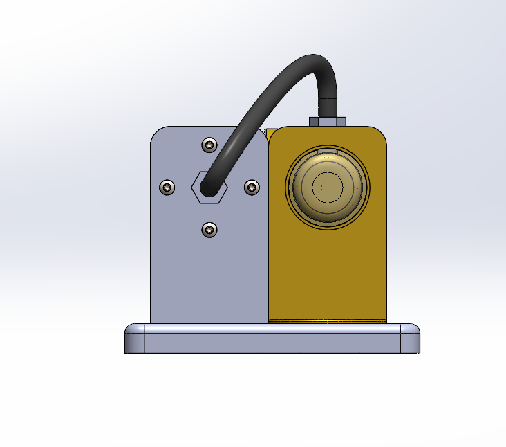
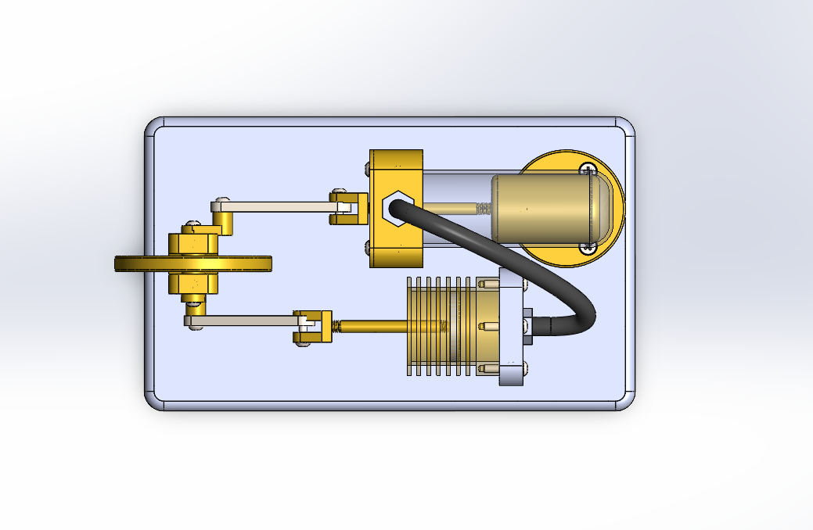
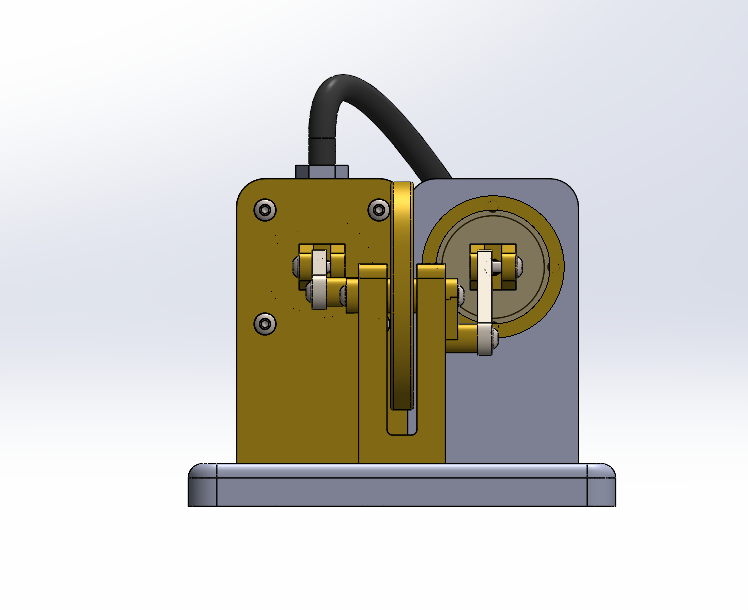
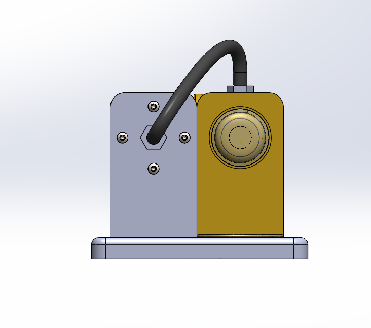

Project Background
- Objective: To design and model a functional Alpha-type Stirling engine, focusing on precise linkage kinematics and thermal-to-mechanical energy conversion.
Key Technical Features
- Kinematics: Modeled a 90-degree phase shift between the power piston and displacer to optimize the thermodynamic cycle.
- Design for Assembly (DFA): Utilized standard fastener sizes (M3/M4) and incorporated press-fit bearings for the crankshaft to ensure smooth rotation.
- Material Selection: Specified high-thermal-conductivity materials for the hot end and transparent borosilicate glass for the displacer cylinder to allow for visual inspection of the stroke.
 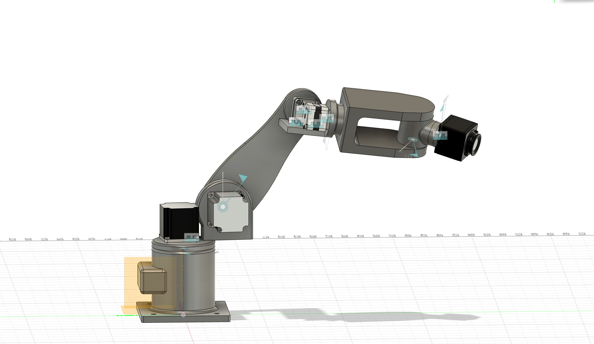
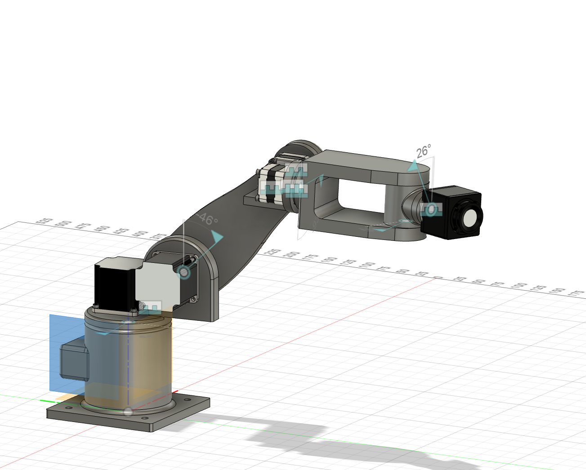
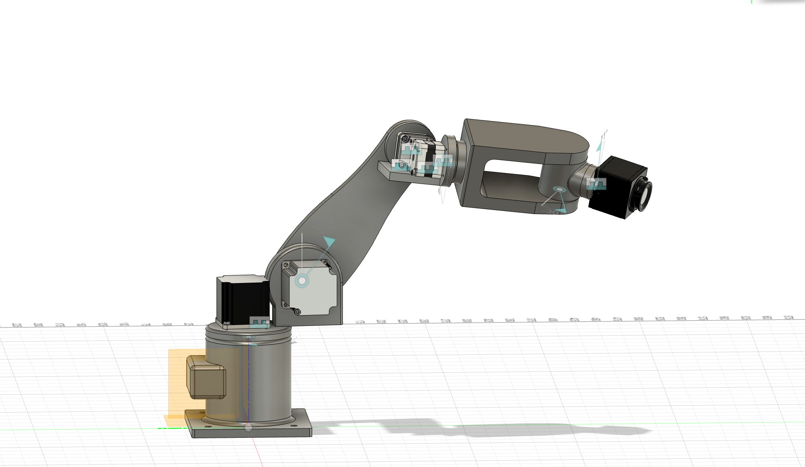
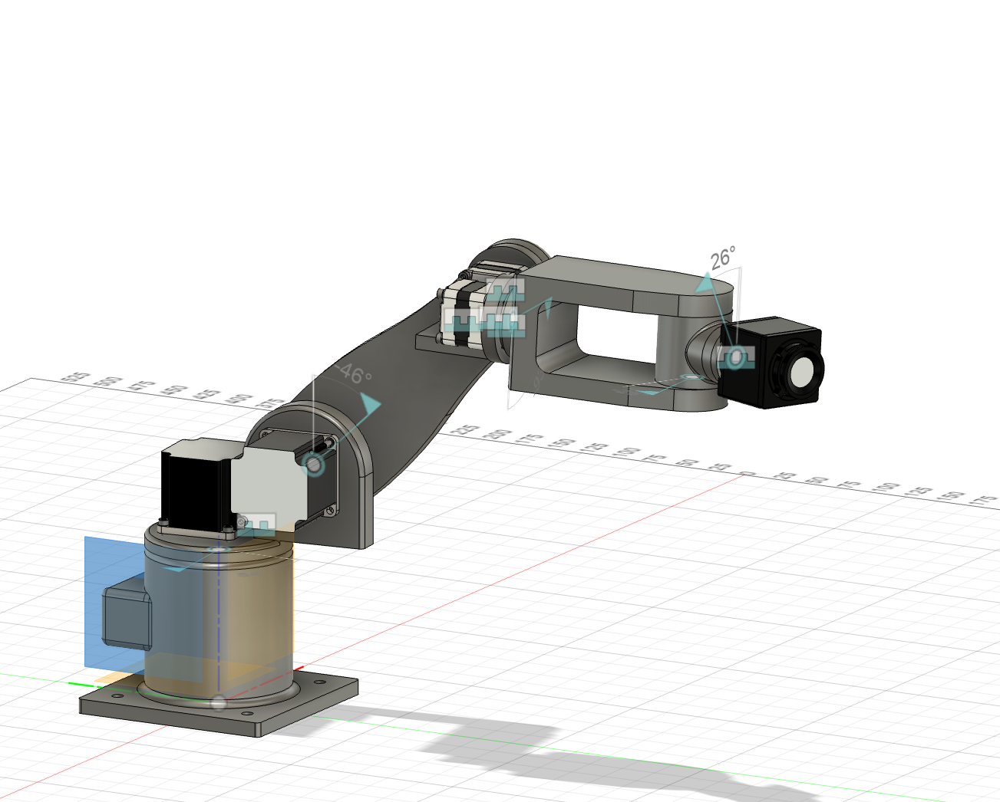